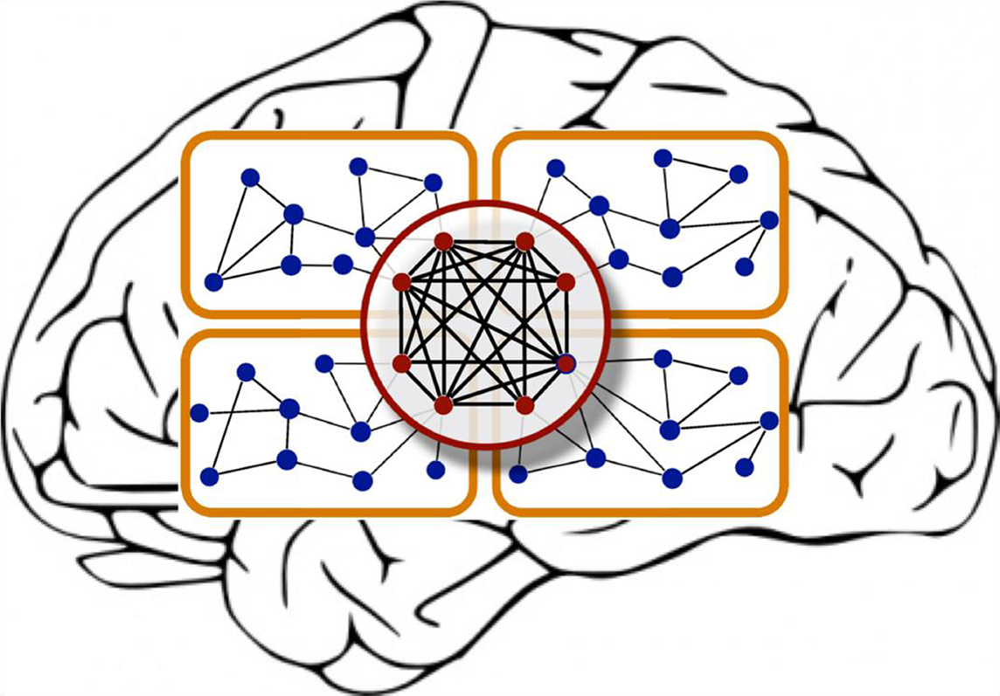
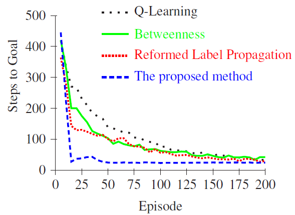

Selected Research Projects:
Location-Sensitive Convolutional Neural Networks for WMH Segmentation in Brain MR Images
 (Sept. 2015)The anatomical location of imaging features is of crucial importance for accurate diagnosis in many medical tasks. Convolutional neural networks (CNN) have had huge successes in computer vision, but they lack the natural ability to incorporate the anatomical location in their decision making process, hindering success in some medical image analysis tasks.
In this project, we have addressed this problem, by augmenting explicit location features into the networks, while the weights are being learned during the training. We have benchmarked such a strategy applying to the task of white matter hyperintensity segmentation in brain MR images of a large dataset and compared the proposed architecture with for various multi-scale architectures that also aim to capture more contextual information. As a result, we observed that the CNNs that incorporate location information substantially outperform a conventional segmentation method with hand-crafted features as well as CNNs that do not integrate location information.
I was personally pretty excited that on a test set of 46 scans, the best configuration of our networks (a hybrid system that utilized explicit spatial features as well as multi-scale patches) obtained a Dice score of 0.791, compared to 0.797 for an independent expert human observer while no statistically significant advantage of the independent human expert was observed (p-value=0.17).
A preprint of the corresponding manuscript on ArXiv • PDF
Non-uniform patch sampling for Convolutional Neural Networks Applied to WMH Segmentation in Brain MR Images
 (Oct. 2015)
(Oct. 2015)Convolutional neural networks (CNN) have been reported to be the state of the art in most of visual recognition tasks and in particular in image classification and object detection. A popular way to extend image classifying CNNs for a segmentation problem is to train them to predict the label for each voxel given a small patch representing a local neighborhood of that voxel. Nonetheless the chosen patch size might impose natural limitations hindering success of such segmentation systems in many medical image analysis applications, where the anatomical location of the imaging features is of crucial importance; small patches lack enough contextual information, while larger patch sizes, apart from higher computational costs, decrease the localization accuracy.
A way to address this problem is to break the unnecessary assumption of uniform patch sampling. The human visual system also non-uniformly perceives the world, with a lot of details at the focal point but a compact contextual representation from large areas in the surroundings. Inspired by the way our natural visual system performs, in this project we took non-uniformly sampled patches to train deep CNNs and we applied such a system for segmentation of WMHs, where a comprehensive inclusion of contextual information matters for a decent segmentation. We showed that using this sampling approach, a CNN outperforms similar single-scale and even more complex multi-scale networks that use uniform sampling.
The corresponding manuscript published in IEEE ISBI provides more details on this work. • PDF
Automated Temporal Abstraction in Reinforcement Learning using Ant System Algorithm
 Nowadays developing autonomous systems, that can act in various environments and interactively perform their assigned tasks, are intensively desirable. Reinforcement learning is an attractive area of machine learning that addresses these concerns. In large scales, learning performance of an agent can be improved by using hierarchical Reinforcement Learning techniques and temporary extended actions. In this study, we proposed a new method for subgoal states discovery and construction of useful skills. In particular we executed a few iterations of Ant System optimization and separated the bottleneck transitions using their specific property that their pheromone concentrations change more smoothly compared to the other transitions. Experimental Results show that the proposed method can significantly improve the learning performance of the agent in several simulated environments including the Taxi and the Playroom environments.To see more details on the study, see our published work at AAAI symposium 2013. • PDF